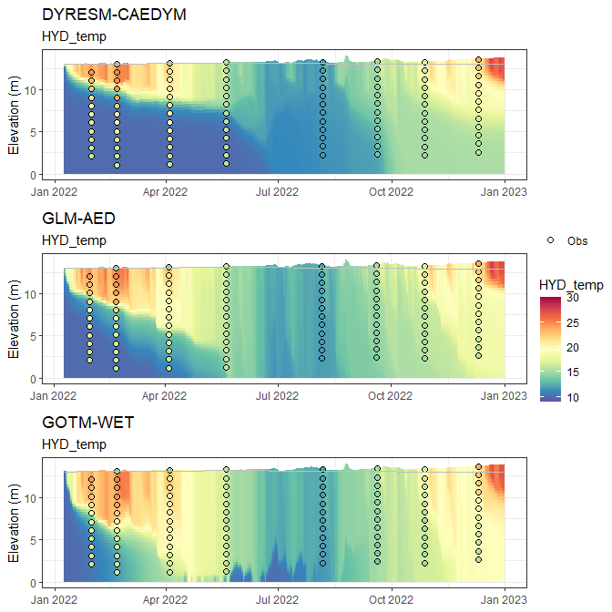

The Aquatic Ecosystem Model Ensemble (AEME) package allows you to setup and run an ensemble of aquatic ecosystem models. The models are DYRESM-CAEDYM, GLM-AED and GOTM-WET.
Installation
You can install the development version of AEME from GitHub with:
# install.packages("devtools")
devtools::install_github("limnotrack/AEME")Example
This is a basic example which shows you how to build and run one of the models in the ensemble:
library(AEME)
#>
#> Attaching package: 'AEME'
#> The following object is masked from 'package:stats':
#>
#> time
## basic example code
tmpdir <- tempdir()
aeme_dir <- system.file("extdata/lake/", package = "AEME")
# Copy files from package into tempdir
file.copy(aeme_dir, tmpdir, recursive = TRUE)
#> [1] TRUE
path <- file.path(tmpdir, "lake")
aeme_data <- yaml_to_aeme(path = path, "aeme.yaml")
#> Linking to GEOS 3.11.2, GDAL 3.6.2, PROJ 9.2.0; sf_use_s2() is FALSE
#> Warning in aeme_constructor(lake = yaml$lake, catchment = yaml$catchment, : Lake area [152343 m2] is different to the area calculated from the lake
#> shape [152433.09 m2].
mod_ctrls <- read.csv(file.path(path, "model_controls.csv"))
inf_factor = c("dy_cd" = 1, "glm_aed" = 1, "gotm_wet" = 1)
outf_factor = c("dy_cd" = 1, "glm_aed" = 1, "gotm_wet" = 1)
model <- c("dy_cd", "glm_aed", "gotm_wet")
aeme_data <- build_ensemble(path = path, aeme_data = aeme_data, model = model, mod_ctrls = mod_ctrls, inf_factor = inf_factor, ext_elev = 5, use_bgc = FALSE, use_lw = TRUE)
#> Building simulation for Wainamu [2023-09-01 15:33:29.049674]
#> Using observed water level
#> Estimating temperature using Stefan & Preud'homme (2007)...
#> Building DYRESM-CAEDYM for lake wainamu
#> Copied in DYRESM par file
#> Downsampling bathymetry
#> Building GLM3-AED2 model for lake wainamu
#> Copied in GLM nml file
#> Building GOTM-WET for lake wainamu
#> Copied all GOTM configuration files
aeme_data <- run_aeme(aeme_data = aeme_data, model = model, verbose = FALSE, path = path, parallel = TRUE, mod_ctrls = mod_ctrls)
#> Running models in parallel... [2023-09-01 15:33:31.757677]
#> Model run complete![2023-09-01 15:33:45.152485]
#> Reading models in parallel... [2023-09-01 15:33:46.633558]
#> Model reading complete![2023-09-01 15:33:47.298898]The model input and output (I/O) is handled as it’s own S4 object of class aeme. This allows for the standardisation and generalisation of functions for this class alongside ensuring integrity and validity to it’s structure.
class(aeme_data)
#> [1] "aeme"
#> attr(,"package")
#> [1] "AEME"This allows for easier handling of the model output data within our structure and allows for condensed output to be printed to the console:
aeme_data
#> AEME
#> -------------------------------------------------------------------
#> Lake
#> Wainamu (ID: 45819); Lat: -36.89; Lon: 174.47; Elev: 23.64m; Depth: 13.07m;
#> Area: 152343 m2; Shape file: Present
#> -------------------------------------------------------------------
#> Catchment
#> Name: Wainamu; Area: 4989125 m2;
#> Shape file: Present
#> -------------------------------------------------------------------
#> Time
#> Start: 2022-01-09 Stop: 2022-12-31 Time step: 3600
#> -------------------------------------------------------------------
#> Configuration
#> Physical | Biogeochemical
#> DY-CD : Present | Absent
#> GLM-AED : Present | Absent
#> GOTM-WET : Present | Absent
#> -------------------------------------------------------------------
#> Observations
#> Lake: Present; Level: Present
#> -------------------------------------------------------------------
#> Input
#> Inital profile: Present; Inital depth: 13.07m; Hypsograph: Present (n=132);
#> Meteo: Present; Use longwave: TRUE; Kw: 0.98
#> -------------------------------------------------------------------
#> Inflows
#> Data: Present; Scaling factors: DY-CD: 1; GLM-AED: 1; GOTM-WET: 1
#> -------------------------------------------------------------------
#> Outflows
#> Data: Present; Scaling factors: DY-CD: 1; GLM-AED: 1; GOTM-WET: 1
#> -------------------------------------------------------------------
#> Output:
#> DY-CD: Present
#> GLM-AED: Present
#> GOTM-WET: PresentSummarised easily:
summary(aeme_data)
#> Lake observations:
#> LID lake id_station station
#> Min. :45819 Length:5531 Min. :44616 Length:5531
#> 1st Qu.:45819 Class :character 1st Qu.:44616 Class :character
#> Median :45819 Mode :character Median :44616 Mode :character
#> Mean :45819 Mean :44616
#> 3rd Qu.:45819 3rd Qu.:44616
#> Max. :45819 Max. :44648
#> Date depth_from depth_to var
#> Min. :1991-05-25 Min. : 0.000 Min. : 0.000 Length:5531
#> 1st Qu.:2006-03-05 1st Qu.: 2.000 1st Qu.: 2.000 Class :character
#> Median :2012-04-14 Median : 5.000 Median : 5.000 Mode :character
#> Mean :2011-11-26 Mean : 5.008 Mean : 5.008
#> 3rd Qu.:2019-04-20 3rd Qu.: 8.000 3rd Qu.: 8.000
#> Max. :2024-06-09 Max. :15.000 Max. :15.000
#> value units flag_detection
#> Min. : 0.000 Length:5531 Mode:logical
#> 1st Qu.: 0.070 Class :character NA's:5531
#> Median : 5.500 Mode :character
#> Mean : 7.047
#> 3rd Qu.: 13.085
#> Max. :101.000
#> -------------------------------------------------------------------
#> Lake level:
#> Date lvlwtr
#> Min. :2018-12-31 Min. :23.57
#> 1st Qu.:2020-03-31 1st Qu.:23.59
#> Median :2021-06-30 Median :23.64
#> Mean :2021-06-30 Mean :23.64
#> 3rd Qu.:2022-09-29 3rd Qu.:23.69
#> Max. :2023-12-30 Max. :23.71
#> -------------------------------------------------------------------
#> Meteorology:
#> Date MET_wnduvu MET_wnduvv MET_tmpdew
#> Min. :2022-01-01 Min. :-11.16345 Min. :-10.2845 Min. : 1.718
#> 1st Qu.:2022-04-02 1st Qu.: -2.98211 1st Qu.: -3.0025 1st Qu.:10.036
#> Median :2022-07-02 Median : -0.30557 Median : -0.1780 Median :12.635
#> Mean :2022-07-02 Mean : 0.01658 Mean : -0.1501 Mean :12.528
#> 3rd Qu.:2022-10-01 3rd Qu.: 2.90679 3rd Qu.: 2.7472 3rd Qu.:15.097
#> Max. :2022-12-31 Max. : 12.76652 Max. : 10.1251 Max. :22.409
#> MET_tmpair MET_ppsnow MET_prsttn MET_radswd
#> Min. : 8.992 Min. :0 Min. : 98829 Min. : 37.76
#> 1st Qu.:13.974 1st Qu.:0 1st Qu.:100492 1st Qu.:114.64
#> Median :16.234 Median :0 Median :101065 Median :180.01
#> Mean :16.433 Mean :0 Mean :100999 Mean :187.23
#> 3rd Qu.:19.273 3rd Qu.:0 3rd Qu.:101472 3rd Qu.:255.27
#> Max. :24.478 Max. :0 Max. :103178 Max. :376.33
#> MET_radlwd MET_pprain
#> Min. :280.2 Min. : 0.0000
#> 1st Qu.:326.3 1st Qu.: 0.2425
#> Median :343.1 Median : 1.4569
#> Mean :343.8 Mean : 6.3316
#> 3rd Qu.:360.2 3rd Qu.: 8.1555
#> Max. :426.2 Max. :61.4505
#> -------------------------------------------------------------------
#> Inflows:
#> FWMT
#> Date HYD_flow HYD_temp CHM_salt
#> Min. :2018-12-31 Min. : 111.7 Min. :10.00 Min. :0
#> 1st Qu.:2020-03-31 1st Qu.: 1430.2 1st Qu.:11.47 1st Qu.:0
#> Median :2021-06-30 Median : 4677.8 Median :15.00 Median :0
#> Mean :2021-06-30 Mean : 9748.9 Mean :15.00 Mean :0
#> 3rd Qu.:2022-09-29 3rd Qu.: 11403.0 3rd Qu.:18.52 3rd Qu.:0
#> Max. :2023-12-30 Max. :247783.4 Max. :20.00 Max. :0
#> CHM_oxy PHS_frp PHS_dop PHS_pop
#> Min. : 9.234 Min. :3.235e-05 Min. :1.532e-06 Min. :6.127e-06
#> 1st Qu.: 9.513 1st Qu.:4.099e-04 1st Qu.:1.514e-05 1st Qu.:6.056e-05
#> Median :10.240 Median :1.024e-03 Median :4.051e-05 Median :1.621e-04
#> Mean :10.292 Mean :3.732e-03 Mean :1.441e-04 Mean :5.766e-04
#> 3rd Qu.:11.073 3rd Qu.:4.334e-03 3rd Qu.:1.693e-04 3rd Qu.:6.772e-04
#> Max. :11.455 Max. :4.642e-02 Max. :1.746e-03 Max. :6.983e-03
#> PHS_pip NIT_amm NIT_nit
#> Min. :2.298e-05 Min. :0.0002219 Min. :2.014e-05
#> 1st Qu.:2.271e-04 1st Qu.:0.0019064 1st Qu.:1.774e-04
#> Median :6.077e-04 Median :0.0040237 Median :4.139e-04
#> Mean :2.162e-03 Mean :0.0138761 Mean :1.184e-03
#> 3rd Qu.:2.539e-03 3rd Qu.:0.0129178 3rd Qu.:1.312e-03
#> Max. :2.619e-02 Max. :0.2016053 Max. :4.289e-02
#> NIT_don NIT_pon CAR_doc
#> Min. :0.0000785 Min. :0.0001177 Min. :0.0004457
#> 1st Qu.:0.0006400 1st Qu.:0.0009599 1st Qu.:0.0036341
#> Median :0.0015013 Median :0.0022520 Median :0.0085254
#> Mean :0.0043520 Mean :0.0065279 Mean :0.0247128
#> 3rd Qu.:0.0052643 3rd Qu.:0.0078964 3rd Qu.:0.0298936
#> Max. :0.0523152 Max. :0.0784728 Max. :0.2970757
#> CAR_poc SIL_rsi NCS_ss1 NCS_ss2 PHY_cyano
#> Min. :0.0006686 Min. :10 Min. : 0.01773 Min. :0 Min. :0.1
#> 1st Qu.:0.0054512 1st Qu.:10 1st Qu.: 0.16310 1st Qu.:0 1st Qu.:0.1
#> Median :0.0127881 Median :10 Median : 0.43163 Median :0 Median :0.1
#> Mean :0.0370693 Mean :10 Mean : 1.38127 Mean :0 Mean :0.1
#> 3rd Qu.:0.0448404 3rd Qu.:10 3rd Qu.: 1.11036 3rd Qu.:0 3rd Qu.:0.1
#> Max. :0.4456136 Max. :10 Max. :48.38967 Max. :0 Max. :0.1
#> PHY_green PHY_diatom
#> Min. :0.1 Min. :0.1
#> 1st Qu.:0.1 1st Qu.:0.1
#> Median :0.1 Median :0.1
#> Mean :0.1 Mean :0.1
#> 3rd Qu.:0.1 3rd Qu.:0.1
#> Max. :0.1 Max. :0.1
#> -------------------------------------------------------------------
#> Outflows:
#> outflow
#> Date outflow
#> Min. :2018-12-31 Min. : 0.00
#> 1st Qu.:2020-03-31 1st Qu.: 74.76
#> Median :2021-06-30 Median : 4509.66
#> Mean :2021-06-30 Mean : 9520.33
#> 3rd Qu.:2022-09-29 3rd Qu.: 13446.05
#> Max. :2023-12-30 Max. :106553.81
#> NA's :4
#> wbal
#> Date outflow_dy_cd outflow_glm_aed outflow_gotm_wet
#> Min. :2022-01-05 Min. : 0.0 Min. : 0.0 Min. : 0.0
#> 1st Qu.:2022-04-05 1st Qu.: 0.0 1st Qu.: 0.0 1st Qu.: 0.0
#> Median :2022-07-04 Median : 0.0 Median : 0.0 Median : 0.0
#> Mean :2022-07-04 Mean : 603.1 Mean : 603.1 Mean : 648.1
#> 3rd Qu.:2022-10-02 3rd Qu.: 553.6 3rd Qu.: 553.6 3rd Qu.: 689.3
#> Max. :2022-12-31 Max. :10396.4 Max. :10396.4 Max. :10380.3
#> NA's :4 NA's :4 NA's :4
#> -------------------------------------------------------------------
#> Outputs:
#> DY-CD
#> HYD_evap HYD_evap_flux HYD_Qe HYD_evap_vol
#> Min. :0.000000 Min. :0.000e+00 Min. :-32.94 Min. : 0.0
#> 1st Qu.:0.001270 1st Qu.:1.470e-08 1st Qu.: 31.53 1st Qu.: 198.9
#> Median :0.002341 Median :2.710e-08 Median : 61.18 Median : 364.6
#> Mean :0.002795 Mean :3.235e-08 Mean : 74.50 Mean : 432.5
#> 3rd Qu.:0.004018 3rd Qu.:4.651e-08 3rd Qu.:105.51 3rd Qu.: 619.6
#> Max. :0.009261 Max. :1.072e-07 Max. :272.76 Max. :1436.3
#> HYD_precip HYD_inflow HYD_outflow LAYERS
#> Min. :0.000000 Min. :0.002698 Min. :0.000000 Min. : 0.3243
#> 1st Qu.:0.000250 1st Qu.:0.009058 1st Qu.:0.001491 1st Qu.: 3.5517
#> Median :0.001600 Median :0.028886 Median :0.028332 Median : 6.8499
#> Mean :0.006457 Mean :0.058170 Mean :0.055896 Mean : 6.8127
#> 3rd Qu.:0.008320 3rd Qu.:0.069992 3rd Qu.:0.073921 3rd Qu.:10.1503
#> Max. :0.061450 Max. :0.770015 Max. :0.357712 Max. :14.0232
#> DEPTHS HYD_temp CHM_salt CHM_oxy PHS_frp
#> Min. : 0.000 Min. :10.00 Min. :0 Min. :-99 Min. :-99
#> 1st Qu.: 3.221 1st Qu.:11.28 1st Qu.:0 1st Qu.:-99 1st Qu.:-99
#> Median : 6.519 Median :12.97 Median :0 Median :-99 Median :-99
#> Mean : 6.480 Mean :14.11 Mean :0 Mean :-99 Mean :-99
#> 3rd Qu.: 9.817 3rd Qu.:15.92 3rd Qu.:0 3rd Qu.:-99 3rd Qu.:-99
#> Max. :13.673 Max. :27.73 Max. :0 Max. :-99 Max. :-99
#> PHS_dop PHS_pop PHS_pip PHS_tp NIT_amm
#> Min. :-99 Min. :-99 Min. :-99 Min. :-99 Min. :-99
#> 1st Qu.:-99 1st Qu.:-99 1st Qu.:-99 1st Qu.:-99 1st Qu.:-99
#> Median :-99 Median :-99 Median :-99 Median :-99 Median :-99
#> Mean :-99 Mean :-99 Mean :-99 Mean :-99 Mean :-99
#> 3rd Qu.:-99 3rd Qu.:-99 3rd Qu.:-99 3rd Qu.:-99 3rd Qu.:-99
#> Max. :-99 Max. :-99 Max. :-99 Max. :-99 Max. :-99
#> NIT_nit NIT_don NIT_pon NIT_tn CAR_doc
#> Min. :-99 Min. :-99 Min. :-99 Min. :-99 Min. :-99
#> 1st Qu.:-99 1st Qu.:-99 1st Qu.:-99 1st Qu.:-99 1st Qu.:-99
#> Median :-99 Median :-99 Median :-99 Median :-99 Median :-99
#> Mean :-99 Mean :-99 Mean :-99 Mean :-99 Mean :-99
#> 3rd Qu.:-99 3rd Qu.:-99 3rd Qu.:-99 3rd Qu.:-99 3rd Qu.:-99
#> Max. :-99 Max. :-99 Max. :-99 Max. :-99 Max. :-99
#> CAR_poc SIL_rsi PHY_cyano PHY_green PHY_diatom
#> Min. :-99 Min. :-99 Min. :-99 Min. :-99 Min. :-99
#> 1st Qu.:-99 1st Qu.:-99 1st Qu.:-99 1st Qu.:-99 1st Qu.:-99
#> Median :-99 Median :-99 Median :-99 Median :-99 Median :-99
#> Mean :-99 Mean :-99 Mean :-99 Mean :-99 Mean :-99
#> 3rd Qu.:-99 3rd Qu.:-99 3rd Qu.:-99 3rd Qu.:-99 3rd Qu.:-99
#> Max. :-99 Max. :-99 Max. :-99 Max. :-99 Max. :-99
#> PHY_tchla NCS_ss1
#> Min. :-99 Min. :-99
#> 1st Qu.:-99 1st Qu.:-99
#> Median :-99 Median :-99
#> Mean :-99 Mean :-99
#> 3rd Qu.:-99 3rd Qu.:-99
#> Max. :-99 Max. :-99
#> GLM-AED
#> Date DEPTH HYD_V HYD_A0
#> Min. :19002 Min. :13.00 Min. :1092561 Min. :151320
#> 1st Qu.:19091 1st Qu.:13.19 1st Qu.:1122745 1st Qu.:153695
#> Median :19180 Median :13.29 Median :1137284 Median :154706
#> Mean :19180 Mean :13.33 Mean :1144386 Mean :155170
#> 3rd Qu.:19268 3rd Qu.:13.45 3rd Qu.:1163153 3rd Qu.:156491
#> Max. :19357 Max. :14.05 Max. :1260347 Max. :163032
#> HYD_evap HYD_evap_flux HYD_Qe HYD_evap_vol
#> Min. :0.000000 Min. :0.000e+00 Min. : 0.00 Min. : 0.0
#> 1st Qu.:0.001188 1st Qu.:1.392e-08 1st Qu.: 33.83 1st Qu.: 184.4
#> Median :0.002227 Median :2.568e-08 Median : 63.47 Median : 345.3
#> Mean :0.002609 Mean :2.924e-08 Mean : 74.01 Mean : 404.7
#> 3rd Qu.:0.003711 3rd Qu.:4.125e-08 3rd Qu.:105.01 3rd Qu.: 572.1
#> Max. :0.009087 Max. :9.965e-08 Max. :258.76 Max. :1430.5
#> HYD_precip HYD_inflow HYD_outflow LAYERS
#> Min. :0.000000 Min. :0.00000 Min. :0.000000 Min. : 0.3249
#> 1st Qu.:0.000250 1st Qu.:0.00907 1st Qu.:0.005649 1st Qu.: 3.5590
#> Median :0.001555 Median :0.02883 Median :0.031296 Median : 6.8596
#> Mean :0.006469 Mean :0.05800 Mean :0.059817 Mean : 6.8317
#> 3rd Qu.:0.008320 3rd Qu.:0.07011 3rd Qu.:0.076902 3rd Qu.:10.1709
#> Max. :0.061450 Max. :0.74375 Max. :0.363141 Max. :14.0512
#> DEPTHS HYD_temp CHM_salt CHM_oxy
#> Min. : 0.000 Min. :10.00 Min. :0.000e+00 Min. :-99
#> 1st Qu.: 3.227 1st Qu.:12.44 1st Qu.:4.334e-05 1st Qu.:-99
#> Median : 6.533 Median :14.79 Median :5.846e-05 Median :-99
#> Mean : 6.498 Mean :15.36 Mean :5.521e-05 Mean :-99
#> 3rd Qu.: 9.837 3rd Qu.:18.07 3rd Qu.:7.619e-05 3rd Qu.:-99
#> Max. :13.700 Max. :27.75 Max. :1.256e-04 Max. :-99
#> PHS_frp PHS_dop PHS_pop PHS_pip PHS_tp
#> Min. :-99 Min. :-99 Min. :-99 Min. :-99 Min. :-99
#> 1st Qu.:-99 1st Qu.:-99 1st Qu.:-99 1st Qu.:-99 1st Qu.:-99
#> Median :-99 Median :-99 Median :-99 Median :-99 Median :-99
#> Mean :-99 Mean :-99 Mean :-99 Mean :-99 Mean :-99
#> 3rd Qu.:-99 3rd Qu.:-99 3rd Qu.:-99 3rd Qu.:-99 3rd Qu.:-99
#> Max. :-99 Max. :-99 Max. :-99 Max. :-99 Max. :-99
#> NIT_amm NIT_nit NIT_don NIT_pon NIT_tn
#> Min. :-99 Min. :-99 Min. :-99 Min. :-99 Min. :-99
#> 1st Qu.:-99 1st Qu.:-99 1st Qu.:-99 1st Qu.:-99 1st Qu.:-99
#> Median :-99 Median :-99 Median :-99 Median :-99 Median :-99
#> Mean :-99 Mean :-99 Mean :-99 Mean :-99 Mean :-99
#> 3rd Qu.:-99 3rd Qu.:-99 3rd Qu.:-99 3rd Qu.:-99 3rd Qu.:-99
#> Max. :-99 Max. :-99 Max. :-99 Max. :-99 Max. :-99
#> CAR_doc CAR_poc SIL_rsi PHY_cyano PHY_green
#> Min. :-99 Min. :-99 Min. :-99 Min. :-99 Min. :-99
#> 1st Qu.:-99 1st Qu.:-99 1st Qu.:-99 1st Qu.:-99 1st Qu.:-99
#> Median :-99 Median :-99 Median :-99 Median :-99 Median :-99
#> Mean :-99 Mean :-99 Mean :-99 Mean :-99 Mean :-99
#> 3rd Qu.:-99 3rd Qu.:-99 3rd Qu.:-99 3rd Qu.:-99 3rd Qu.:-99
#> Max. :-99 Max. :-99 Max. :-99 Max. :-99 Max. :-99
#> PHY_diatom PHY_tchla NCS_ss1
#> Min. :-99 Min. :-99 Min. :-99
#> 1st Qu.:-99 1st Qu.:-99 1st Qu.:-99
#> Median :-99 Median :-99 Median :-99
#> Mean :-99 Mean :-99 Mean :-99
#> 3rd Qu.:-99 3rd Qu.:-99 3rd Qu.:-99
#> Max. :-99 Max. :-99 Max. :-99
#> GOTM-WET
#> HYD_V HYD_evap HYD_evap_flux HYD_Qe
#> Min. :-10101 Min. :1.242e-05 Min. :1.438e-10 Min. :-34.91
#> 1st Qu.: 16859 1st Qu.:1.135e-03 1st Qu.:1.314e-08 1st Qu.: 34.55
#> Median : 26863 Median :2.019e-03 Median :2.337e-08 Median : 60.34
#> Mean : 36019 Mean :2.383e-03 Mean :2.758e-08 Mean : 69.13
#> 3rd Qu.: 52516 3rd Qu.:3.278e-03 3rd Qu.:3.794e-08 3rd Qu.: 96.18
#> Max. :137818 Max. :8.742e-03 Max. :1.012e-07 Max. :258.72
#> HYD_evap_vol HYD_precip HYD_outflow LAYERS
#> Min. : 1.909 Min. :9.800e-07 Min. :0.000000 Min. : 0.3251
#> 1st Qu.: 174.169 1st Qu.:4.261e-04 1st Qu.:0.001927 1st Qu.: 3.5538
#> Median : 313.812 Median :2.569e-03 Median :0.028264 Median : 6.8599
#> Mean : 368.882 Mean :6.455e-03 Mean :0.056056 Mean : 6.8179
#> 3rd Qu.: 502.877 3rd Qu.:8.860e-03 3rd Qu.:0.075321 3rd Qu.:10.1664
#> Max. :1345.520 Max. :6.127e-02 Max. :0.354859 Max. :13.9490
#> DEPTHS HYD_temp CHM_salt CHM_oxy PHS_frp
#> Min. : 0.000 Min. :10.00 Min. :0 Min. :-99 Min. :-99
#> 1st Qu.: 3.223 1st Qu.:13.18 1st Qu.:0 1st Qu.:-99 1st Qu.:-99
#> Median : 6.532 Median :16.00 Median :0 Median :-99 Median :-99
#> Mean : 6.485 Mean :16.34 Mean :0 Mean :-99 Mean :-99
#> 3rd Qu.: 9.835 3rd Qu.:19.22 3rd Qu.:0 3rd Qu.:-99 3rd Qu.:-99
#> Max. :13.600 Max. :27.43 Max. :0 Max. :-99 Max. :-99
#> PHS_dop PHS_pop PHS_pip PHS_tp NIT_amm
#> Min. :-99 Min. :-99 Min. :-99 Min. :-99 Min. :-99
#> 1st Qu.:-99 1st Qu.:-99 1st Qu.:-99 1st Qu.:-99 1st Qu.:-99
#> Median :-99 Median :-99 Median :-99 Median :-99 Median :-99
#> Mean :-99 Mean :-99 Mean :-99 Mean :-99 Mean :-99
#> 3rd Qu.:-99 3rd Qu.:-99 3rd Qu.:-99 3rd Qu.:-99 3rd Qu.:-99
#> Max. :-99 Max. :-99 Max. :-99 Max. :-99 Max. :-99
#> NIT_nit NIT_don NIT_pon NIT_tn CAR_doc
#> Min. :-99 Min. :-99 Min. :-99 Min. :-99 Min. :-99
#> 1st Qu.:-99 1st Qu.:-99 1st Qu.:-99 1st Qu.:-99 1st Qu.:-99
#> Median :-99 Median :-99 Median :-99 Median :-99 Median :-99
#> Mean :-99 Mean :-99 Mean :-99 Mean :-99 Mean :-99
#> 3rd Qu.:-99 3rd Qu.:-99 3rd Qu.:-99 3rd Qu.:-99 3rd Qu.:-99
#> Max. :-99 Max. :-99 Max. :-99 Max. :-99 Max. :-99
#> CAR_poc SIL_rsi PHY_cyano PHY_green PHY_diatom
#> Min. :-99 Min. :-99 Min. :-99 Min. :-99 Min. :-99
#> 1st Qu.:-99 1st Qu.:-99 1st Qu.:-99 1st Qu.:-99 1st Qu.:-99
#> Median :-99 Median :-99 Median :-99 Median :-99 Median :-99
#> Mean :-99 Mean :-99 Mean :-99 Mean :-99 Mean :-99
#> 3rd Qu.:-99 3rd Qu.:-99 3rd Qu.:-99 3rd Qu.:-99 3rd Qu.:-99
#> Max. :-99 Max. :-99 Max. :-99 Max. :-99 Max. :-99
#> PHY_tchla NCS_ss1
#> Min. :-99 Min. :-99
#> 1st Qu.:-99 1st Qu.:-99
#> Median :-99 Median :-99
#> Mean :-99 Mean :-99
#> 3rd Qu.:-99 3rd Qu.:-99
#> Max. :-99 Max. :-99
#> -------------------------------------------------------------------Model data can be visualised easily using the plot_output() function
plot_list <- plot_output(aeme_data = aeme_data, model = model, var_sim = "HYD_temp",
level = TRUE, label = TRUE, var_lims = c(9, 30), print_plots = FALSE)
library(ggpubr)
#> Loading required package: ggplot2
ggarrange(plotlist = plot_list, ncol = 1, common.legend = TRUE, legend = "right")
#> Warning: Using size for a discrete variable is not advised.
#> Using size for a discrete variable is not advised.
#> Using size for a discrete variable is not advised.
#> Using size for a discrete variable is not advised. Also, visualising lake level plots.
plot_list <- plot_output(aeme_data = aeme_data, model = model, var_sim = "DEPTH",
level = TRUE, label = TRUE, var_lims = c(9, 30), print_plots = FALSE)
plot_list